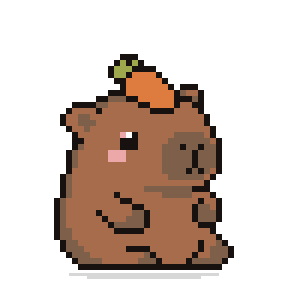

Windows
A desktop pet for Windows 10 and 11 that stays out of your way
Capybara Pet is a small pixel-art capybara that sits on top of your Windows desktop. He follows your cursor, taps along while you type, and reminds you to take breaks.

A calm desktop companion for Windows
Capybara Pet is a transparent, always-on-top window the size of a postage stamp. You can click straight through everything except the capybara himself, so he never blocks your work. Drag him wherever you like and he remembers the spot.
Built for Windows
- Standard installer for Windows 10 and 11 (64-bit). Choose your install folder and you are done.
- System tray control. Settings, the Pomodoro timer and Peek mode live in the tray icon.
- Launch at login if you want him there every morning.
- Peek mode (Ctrl + Alt + P) hides him below the screen edge until a reminder is due.
- No account and no telemetry. The app only learns that a key was pressed, never which key.
Reactions
He turns to face your cursor and follows it with his eye. When you type, a tiny keyboard appears and his paws take turns on the keys; type angrily and he turns red and steams. Scroll and a paper roll unspools along the floor. Drag him and he stretches like mochi, shake him and he goes dizzy with spiral eyes. If you walk away he gets sleepy, yawns, and falls asleep with floating Zzz.
Productivity features
Set stretch and water reminders, start a Pomodoro focus timer that floats beside him, pin an important note above his head, and give him your name. For developers there is built-in support for AI coding tools, see how Capybara Pet works with Claude Code.
Installing on Windows
- Run the installer. If SmartScreen warns about an unknown publisher (the app is not code-signed yet), choose More info, then Run anyway.
- Pick an install folder. He appears in the corner of your screen.
- Paste your activation code. Settings live in the system tray icon.
Some antivirus tools flag keyboard hooks. If he does not react to typing, allow Capybara Pet in your antivirus settings.
Frequently asked questions
Which Windows versions are supported?
Windows 10 and Windows 11, 64-bit.
Why does SmartScreen show a warning?
The installer is not code-signed yet, so Windows shows an unknown-publisher warning. Choose More info, then Run anyway.
Can I use it on more than one PC?
One activation code works on up to three of your computers, Windows or Mac, and you can move it between them at any time.
Does it record what I type?
No. The app only receives the fact that a key was pressed, never which key, and nothing is stored or sent.